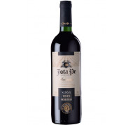

Vinhos
Vinho Tinto Nacional CAMPO LARGO Suave de Mesa 750ml
Composição: Fermentado De Uvas, Açúcar E Conservadores Ins220 E 202. Álcool: 10% Vol..

VINHO JOTA PE TINTO SUAVE 750ML
Marca: Jota Pe Teor alcoólico: 10,5% Açúcar residual: 80 g/L Ph: 3,57
VINHO VIVANT BRANCO EM LATA 269ML
Teor Alcóolico: 11,5% Temperatura ideal: Até 10°C 1 lata = 2 taças Beba gelado e com moderação! Viva seu Vinho!
VINHO MONTE PASCHOAL VIRTUS MERLOT ROSÉ 750ML
Temperatura ideal de consumo: 8 a 10 graus. Teor alcoólico: 11% vol. .
VINHO ALMADÉN CABERNET FRANC 750ML
Teor Alcoólico: 11% Temperatura de Serviço: 15º Volume: 750 ml Uva: cabernet Franc.
Vinho Poderuccio Camigliano 750ml
Tipo: Tinto Uva: Sangiovese, Merlot e Cabernet Sauvignon. Teor Alcoólico: 13%.
Sobre nós
Estudantes do 3 ano Informática.
Nos Contate
email@email.com
Pedro II, PI BR
86995517954
Powered by w3.css